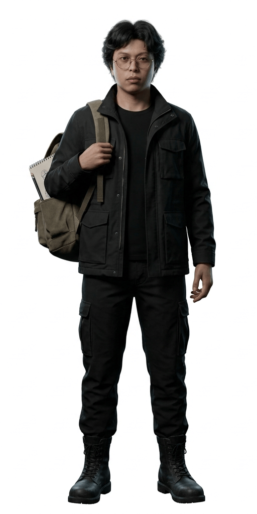
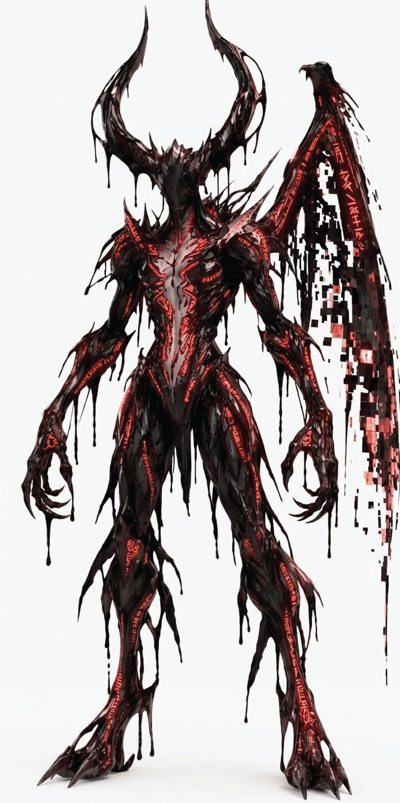
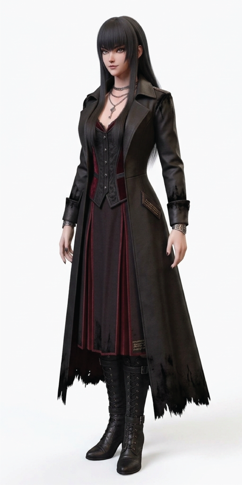
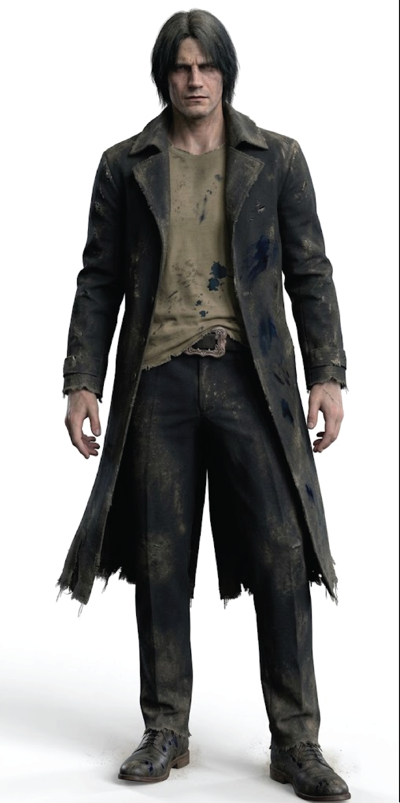

Protagonist
Aiman
20, final-year Digital Media student. Came to document the abandoned studio for his thesis.
Curiosity85
Stealth55
Sanity45

20, final-year Digital Media student. Came to document the abandoned studio for his thesis.

A creature of living ink, its wings fractured by digital pixels.

An old friend from the past who left a mysterious message.

An enigmatic figure tied to the studio's darkest secrets.
No weapons. Just a stylus, a flickering projector and the nerve to rewind.
Use your stylus to wipe away black ink and reveal hidden doors, notes and shortcuts. But erased ink doesn't vanish. It goes somewhere.
Crank a projector to carve out a pocket of safety. Ink recoils from the beam, but the whirring and the glare can be heard from the next room.
Scrub old film reels frame by frame to see what happened in each room, then change the drawings that no longer match the past.
The Demon's pixel wings desync when it moves, crackling like a bad signal. Learn the static and you will know when to hide.